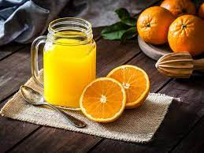

Home
Fresh OJ

Description
This recipe is sweet, simple, and affective. There is no better OJ.
Ingredients
- As many oranges as you want.
Steps!
- Roll them oranges on the counter til soft.
- Cut in half
- Squeeze or use a hand juicer for less pulp!
- ENJOY!